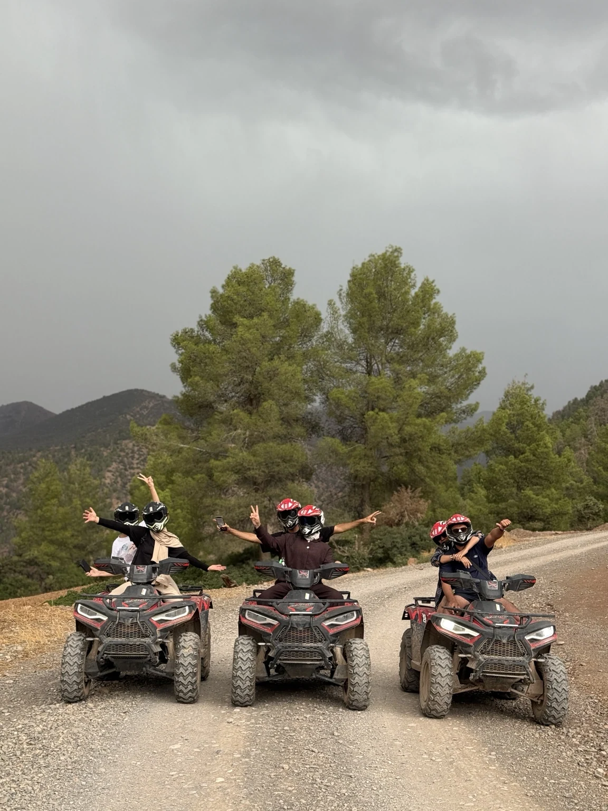
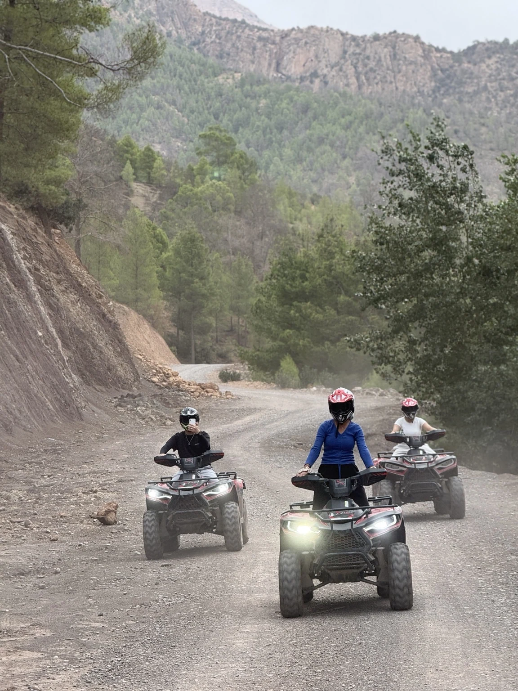
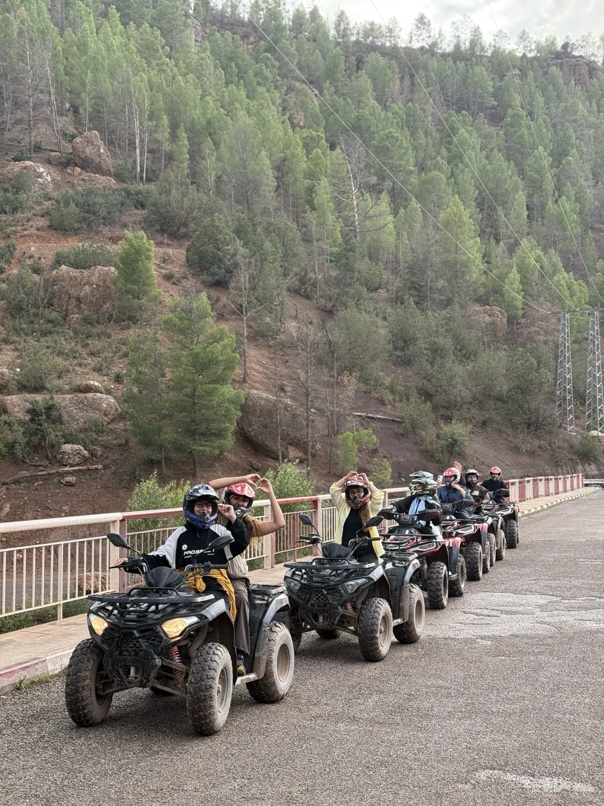

Feel the
adventure.
One hour on Imsfrane’s mountain trails with a local guide. No previous experience needed: an introduction is included before departure.



A different side of the mountains.
Enjoy a guided ride through the Atlas landscapes, along forest tracks and scenic viewpoints.
Your adventure in four steps
Welcome
Meet your guide and learn about the ride.
Introduction
Learn the controls and practice before departure.
Guided ride
One hour on the trails with a local guide.
Return
Finish the ride with great memories.
One simple price
per quad, 1 or 2 people · 1 hour
The mountains in pictures
Twelve real moments from our adventures. Tap any photo to view it in full.
Frequently asked questions
Do I need experience?
No. An introduction to quad riding is included before departure.
Is a guide included?
Yes, a local guide accompanies the entire ride.
How much for two people?
250 MAD total for one hour when two people share one quad.
Do I need a licence?
Licence requirements depend on the vehicle and route. Our team will confirm the applicable conditions before booking.
Helmet, briefing and guide instructions are essential. Routes depend on weather and trail conditions.
Your adventure starts here
Contact our team to choose a date and confirm your ride.
Book on WhatsApp ↗